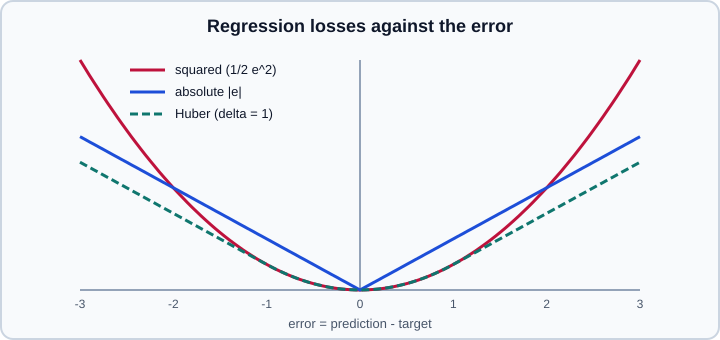

Loss Functions & Information Theory
|
This content was generated with the assistance of AI and should be verified against the official documentation before being relied on in production. |
A loss function turns "how wrong is this prediction?" into a single number that an optimiser can reduce. Choosing it is a modelling decision, not a detail: the loss defines what the model is asked to estimate (a mean, a median, a probability, a quantile) and how much it should care about outliers, confident mistakes and rare classes. Information theory supplies the vocabulary for the classification losses, and explains why one of them, cross-entropy, is so dominant.
This page targets Python 3.13, PyTorch 2.15 and TensorFlow 2.21 with Keras 3.15, and was checked on 2026-10-30. Examples were run on Python 3.13 with NumPy 2, PyTorch 2.15 (CPU) and Keras 3.15 on TensorFlow 2.21 on 2026-11-01. It builds on Math for ML (probability, maximum likelihood, softmax) and feeds directly into Gradient Descent & Optimization. For the evaluation metrics that you report to people, as opposed to the losses you optimise, see Model Evaluation and Metrics & Scoring.
Loss, cost and risk
A loss \(\ell(\hat{y}, y)\) scores one prediction against one target. The empirical risk is its average over the training sample, and empirical risk minimisation (ERM) is the principle that training minimises it:
\[\hat{R}(\theta) = \frac{1}{N} \sum_{i=1}^{N} \ell\big(f(x_i; \theta),\, y_i\big)\]
What you actually want is the true risk, the same average over the whole data distribution, which you can only estimate on held-out data (see Generalization, Bias-Variance & Regularization). Several terms are used loosely: loss for one example, cost or objective for the averaged quantity (often plus a regularisation penalty), and metric for what you report. They differ in an important way.
-
A loss must be (almost everywhere) differentiable and informative, because gradients flow through it.
-
A metric must be meaningful to people: accuracy, F1, ROC AUC, RMSE in dollars.
-
The two are often different. Accuracy is a poor loss because it is a step function whose gradient is zero almost everywhere, so classification trains on a smooth surrogate (cross-entropy, hinge) and is judged on accuracy or a threshold-based metric.
-
A lower training loss is not always a better metric: a model can improve its loss while its accuracy is flat, because the loss also rewards confidence.
Information theory in five definitions
Information theory measures uncertainty. Everything below uses probabilities of discrete outcomes; logarithms in base 2 give bits, natural logarithms give nats. Deep-learning libraries use natural logarithms, so their losses are in nats.
Self-information of an event with probability \(p\) is \(-\log p\): rare events carry more information.
Entropy is the expected self-information of a distribution \(p\), the average uncertainty. It is the minimum average number of bits needed to encode samples from \(p\):
\[H(p) = -\sum_x p(x) \log p(x)\]
A fair coin has the maximum entropy (1 bit); a certain outcome has zero entropy.
Cross-entropy is the expected code length when samples come from \(p\) but you encode them with a code designed for another distribution \(q\):
\[H(p, q) = -\sum_x p(x) \log q(x)\]
KL divergence (Kullback-Leibler) is the extra cost of using \(q\) instead of the true \(p\):
\[D_{\mathrm{KL}}(p \parallel q) = \sum_x p(x) \log \frac{p(x)}{q(x)} = H(p, q) - H(p)\]
It is never negative, is zero only when \(p = q\), and is not symmetric and not a distance: \(D_{\mathrm{KL}}(p \parallel q) \ne D_{\mathrm{KL}}(q \parallel p)\) in general. Minimising it with respect to \(q\) pulls \(q\) to cover all the mass of \(p\) (the forward direction), while the reverse direction makes \(q\) concentrate on one mode. This asymmetry matters in variational inference and in the VAE and distillation objectives.
Mutual information \(I(X; Y) = D_{\mathrm{KL}}\big(p(x, y) \parallel p(x)\,p(y)\big)\) measures how much knowing one variable reduces uncertainty about the other. It is zero for independent variables, and appears in feature selection (mutual_info_classif) and in contrastive representation learning.
Why cross-entropy is the classification loss
In classification the true distribution \(p\) puts all its mass on the correct class (a one-hot vector), and the model outputs a distribution \(q\) through softmax. Because \(H(p)\) is zero for a one-hot target and does not depend on the model anyway, minimising the cross-entropy is the same as minimising the KL divergence, and it reduces to the negative log-probability of the correct class:
\[H(p, q) = -\log q_{y}\]
Averaged over the dataset, this is the negative log-likelihood of the labels under the model, so training with cross-entropy is maximum likelihood estimation (see Math for ML). The names are therefore interchangeable in practice: log loss, logistic loss, cross-entropy, and negative log-likelihood of a categorical model all describe the same quantity. The loss is large when the model is confidently wrong, and its gradient with respect to the logits has a pleasantly simple form, \(q - p\) (predicted probabilities minus targets), which is why softmax and cross-entropy are fused in every library.
import numpy as np
def entropy(p):
p = np.asarray(p, dtype=float)
nz = p > 0 # define 0 * log 0 = 0
return -np.sum(p[nz] * np.log2(p[nz]))
def cross_entropy(p, q):
p, q = np.asarray(p, float), np.asarray(q, float)
nz = p > 0
return -np.sum(p[nz] * np.log2(q[nz]))
def kl(p, q):
return cross_entropy(p, q) - entropy(p)
p = np.array([0.5, 0.25, 0.25])
q = np.array([1 / 3, 1 / 3, 1 / 3])
print("H(p) =", entropy(p))
print("H(p, q) =", cross_entropy(p, q))
print("KL(p||q) =", kl(p, q))
print("KL(q||p) =", kl(q, p))Output:
H(p) = 1.5 H(p, q) = 1.5849625007211563 KL(p||q) = 0.0849625007211563 KL(q||p) = 0.08170416594551044
The two KL values differ, which demonstrates the asymmetry, and \(H(p, q) = H(p) + D_{\mathrm{KL}}(p \parallel q)\) holds. Source: torch.nn.KLDivLoss for the definition used by the framework, and sklearn.metrics.log_loss for the same quantity as a metric.
Softmax, logits and numerical stability
A classifier’s last linear layer outputs logits, unconstrained real scores. Softmax converts them to probabilities. Two rules follow from numerical analysis and apply in every framework.
-
Compute the loss from logits. The fused implementation uses the log-sum-exp trick, so a logit of 1000 does not overflow, and the log of a tiny probability does not underflow to minus infinity.
-
Convert to probabilities only for inference (to show a confidence or apply a threshold), never inside the loss.
import numpy as np
def log_softmax(z):
z = z - z.max(axis=-1, keepdims=True) # shift for stability
return z - np.log(np.exp(z).sum(axis=-1, keepdims=True))
logits = np.array([[2.0, 1.0, 0.1],
[1000.0, 0.0, -1000.0]]) # the second row would overflow naively
y = np.array([0, 0]) # correct class indices
nll = -log_softmax(logits)[np.arange(len(y)), y]
print(nll.round(4))Output:
[ 0.417 -0. ]
The second loss is zero (NumPy prints the negated zero as -0.) even though a naive np.exp(1000.0) would overflow to inf. Source: Stanford CS231n: Softmax classifier (its "Practical issues: Numeric stability" note) and Dive into Deep Learning: Softmax revisited.
Regression losses
For a real-valued target, the loss is a function of the error \(e = \hat{y} - y\). The choice decides which summary of the conditional distribution the model learns and how outliers influence it.
| Loss | Formula (per example) | Model learns | Behaviour |
|---|---|---|---|
Squared error (MSE, L2) |
\(\tfrac{1}{2}e^2\) |
The conditional mean |
Smooth, convex, and the maximum-likelihood loss under Gaussian noise. Large errors dominate, so outliers pull the fit. The gradient is proportional to the error, so it shrinks near the optimum. |
Absolute error (MAE, L1) |
\(\lvert e \rvert\) |
The conditional median |
Robust to outliers, but the gradient has constant size and the function has a kink at zero, so plain gradient descent can bounce around the optimum without a learning-rate decay. Maximum likelihood under Laplace noise. |
Huber (smooth L1) |
\(\tfrac{1}{2}e^2\) if \(\lvert e \rvert \le \delta\), else \(\delta(\lvert e \rvert - \tfrac{1}{2}\delta)\) |
Between mean and median |
Quadratic near zero (stable gradients) and linear in the tails (robust). The threshold \(\delta\) is a hyperparameter set in the units of the target. |
Quantile (pinball) |
\(\max(\tau e', (\tau - 1)e')\) with \(e' = y - \hat{y}\) |
The conditional \(\tau\)-quantile |
Asymmetric: under- and over-prediction cost differently. Train one output per quantile to get prediction intervals. |
Poisson negative log-likelihood |
\(\hat{y} - y \log \hat{y}\) |
The mean of a non-negative count |
Used for counts and rates; the model predicts a positive value (often through an exponential). |
The first three losses are drawn against the error below. The squared loss grows fastest, so a single wild target can dominate the average; the Huber loss follows the squared loss for small errors and the absolute loss for large ones.

A tiny experiment makes the mean-versus-median statement concrete. For the constant prediction that minimises the loss over the targets 1, 2, 3 and 10, squared error gives the mean (4.0), while absolute error gives the median, which is any value between 2 and 3.
import numpy as np
def huber(e, delta=1.0):
a = np.abs(e)
return np.where(a <= delta, 0.5 * e ** 2, delta * (a - 0.5 * delta))
def pinball(y, yhat, tau):
d = y - yhat
return np.mean(np.maximum(tau * d, (tau - 1) * d))
e = np.array([-3.0, -0.5, 0.0, 0.5, 3.0])
print("huber:", huber(e))
print("mse :", 0.5 * e ** 2)
print("mae :", np.abs(e))
y = np.array([1.0, 2.0, 3.0, 10.0])
cs = np.linspace(0, 10, 1001)
best_mse = cs[np.argmin([np.mean((y - c) ** 2) for c in cs])]
best_mae = cs[np.argmin([np.mean(np.abs(y - c)) for c in cs])]
print(best_mse, y.mean()) # 4.0 4.0
print(best_mae, np.median(y)) # 2.0 2.5 (any value in [2, 3] is optimal)
print(pinball(y, 2.5, 0.5)) # half the mean absolute errorOutput:
huber: [2.5 0.125 0. 0.125 2.5 ] mse : [4.5 0.125 0. 0.125 4.5 ] mae : [3. 0.5 0. 0.5 3. ] 4.0 4.0 2.0 2.5 1.25
Source: torch.nn.HuberLoss and scikit-learn: Quantile regression. The scikit-learn side is in Linear Models.
Practical guidance for regression:
-
Start with MSE (or RMSE as the reported metric). Switch to Huber or MAE when a residual plot shows a few extreme errors from noisy labels rather than informative points.
-
Normalise the target. A loss on a target measured in millions has gradients of a different scale than one measured in units, and a fixed learning rate then works for neither.
-
For targets spanning orders of magnitude, regress the logarithm of the target (and report errors back on the original scale), or use a loss with a log link such as Poisson.
-
PyTorch’s
SmoothL1Losshas abetaparameter andHuberLosshas adeltaparameter; with \(\delta = \beta\) they differ by a factor of \(\delta\) in magnitude, which matters when you compare loss values or tune the learning rate across the two.
Classification losses
Binary cross-entropy (log loss)
For a binary target \(y \in \{0, 1\}\) and a predicted probability \(p = \sigma(z)\) from a logit \(z\):
\[\ell(z, y) = -\big[\, y \log p + (1 - y) \log (1 - p) \,\big]\]
The numerically stable form is computed from the logit directly, which is exactly what BCEWithLogitsLoss (PyTorch) and BinaryCrossentropy(from_logits=True) (Keras) do. The same loss with one logit per label handles multi-label problems, where several labels can be true at once, while the multi-class case (exactly one label) uses softmax cross-entropy.
Categorical cross-entropy
For K classes with logits \(z\) and true class \(y\):
\[\ell(z, y) = -z_y + \log \sum_{k=1}^{K} e^{z_k}\]
The framework variants differ only in how the target is encoded and what the input is.
| Framework | Loss | Input and target |
|---|---|---|
PyTorch |
|
Raw logits of shape |
PyTorch |
|
Log-probabilities (the output of |
PyTorch |
|
Raw logits and float targets of the same shape. Accepts |
PyTorch |
|
Probabilities already in (0, 1). Less stable; prefer the logits version. |
Keras |
|
Integer class indices. |
Keras |
|
One-hot or soft target vectors. |
Keras |
|
Float targets, one logit per label. |
PyTorch 2.15 also lists nn.LinearCrossEntropyLoss in the loss reference. It applies an internal linear layer (in_features to num_classes) to its input and then computes the cross-entropy, with an options argument that configures a chunked implementation. It is a recent addition, so read its page for the limitations (for example around higher-order differentiation) before relying on it.
The most frequent bugs here are applying softmax or sigmoid and then passing the result to a loss that expects logits (the model still trains, slowly and badly), and the opposite (from_logits=False in Keras on raw logits, which silently clips and mis-scales).
import torch
import torch.nn.functional as F
logits = torch.tensor([[2.0, 1.0, 0.1],
[0.5, 2.5, -1.0]])
target = torch.tensor([0, 1])
ce = F.cross_entropy(logits, target) # logits + class indices
nll = F.nll_loss(F.log_softmax(logits, dim=1), target) # the same, in two steps
print(ce.item(), nll.item()) # identical
# Soft targets (for example from mixup or distillation) are probabilities, not indices
soft = torch.tensor([[0.9, 0.05, 0.05],
[0.0, 1.0, 0.0]])
print(F.cross_entropy(logits, soft).item())
# Multi-label: one independent sigmoid per label, stable from logits
ml_logits = torch.randn(4, 5)
ml_target = torch.randint(0, 2, (4, 5)).float()
print(F.binary_cross_entropy_with_logits(ml_logits, ml_target).item())
# KL divergence: the input must be log-probabilities
log_q = F.log_softmax(logits, dim=1)
p = F.softmax(torch.tensor([[1.0, 1.0, 1.0], [0.0, 3.0, 0.0]]), dim=1)
print(F.kl_div(log_q, p, reduction="batchmean").item()) # "batchmean" matches the mathsSource: torch.nn.CrossEntropyLoss, NLLLoss, BCEWithLogitsLoss and KLDivLoss. With reduction="mean" the KLDivLoss divides by the number of elements, not the batch size, so use reduction="batchmean" for the mathematical definition.
import keras
import numpy as np
model = keras.Sequential([
keras.Input(shape=(20,)),
keras.layers.Dense(64, activation="relu"),
keras.layers.Dense(3), # no softmax: the layer outputs logits
])
model.compile(
optimizer=keras.optimizers.Adam(1e-3),
loss=keras.losses.SparseCategoricalCrossentropy(from_logits=True),
metrics=["accuracy"],
)
x = np.random.default_rng(0).normal(size=(256, 20)).astype("float32")
y = np.random.default_rng(1).integers(0, 3, size=256)
model.fit(x, y, epochs=2, batch_size=32, verbose=0)
# Probabilities are for inference only
probs = keras.ops.softmax(model.predict(x[:2], verbose=0), axis=-1)
print(probs)Source: Keras: Probabilistic losses and tf.keras.losses.
Hinge loss and margins
The hinge loss \(\max(0, 1 - y\,f(x))\), with labels \(y \in \{-1, +1\}\) and a real score \(f(x)\), is the loss of the support vector machine. It is zero once an example is classified correctly with a margin of at least 1, so it ignores easy examples and concentrates on those near or across the boundary, and it does not produce probabilities. The squared hinge is its smooth variant. See Support Vector Machines for the scikit-learn implementation. Cross-entropy, by contrast, never becomes exactly zero: it keeps pushing confidence higher, which is the reason regularisation and early stopping matter for it.
Handling class imbalance and overconfidence
-
Class weights. Multiply each example’s loss by a weight inversely related to its class frequency (
weightinCrossEntropyLoss,pos_weightinBCEWithLogitsLoss,class_weightin Kerasfitand scikit-learn estimators). This shifts the decision boundary toward the rare class without changing the data. -
Focal loss. Multiplies the cross-entropy by \((1 - p_t)^{\gamma}\), where \(p_t\) is the probability of the true class, so well-classified examples contribute almost nothing and hard ones dominate. It was introduced for dense object detection with extreme background-to-object imbalance, and is available in Keras as
BinaryFocalCrossentropyandCategoricalFocalCrossentropy. -
Label smoothing. Replaces the one-hot target by a softened distribution (the true class gets \(1 - \varepsilon\), the rest share \(\varepsilon\)). The model is then never rewarded for infinite confidence, which reduces overconfidence and often improves calibration slightly. It is the
label_smoothingargument of PyTorch’sCrossEntropyLossand of the Keras cross-entropy losses. -
Resampling and thresholds. Often a better remedy for imbalance than reweighting is to keep the probabilities honest and move the decision threshold (see Tuning the Decision Threshold), and to evaluate with metrics that suit the imbalance.
Losses beyond classification and regression
-
Distribution matching. KL divergence between a model and a reference distribution is the knowledge-distillation loss (student against teacher, usually at a temperature), the regulariser in variational autoencoders and the penalty in some reinforcement-learning algorithms. See Generative Models and Model Compression.
-
Sequence alignment. CTC loss (
nn.CTCLoss) trains speech and handwriting recognisers without frame-level alignment. -
Metric learning. Contrastive, triplet (
nn.TripletMarginLoss) and InfoNCE-style losses pull related examples together in an embedding space and push others apart; see Embeddings & Representation Learning. -
Segmentation and overlap. Dice and IoU losses (Keras provides
keras.losses.Dice) optimise region overlap directly and cope with tiny foreground areas, often combined with cross-entropy. -
Probabilistic outputs.
nn.GaussianNLLLosstrains a model to predict both a mean and a variance, giving a heteroscedastic uncertainty estimate. -
Language modelling. Next-token prediction is categorical cross-entropy over the vocabulary; perplexity is its exponential. See Transformer Architecture.
The reduction argument and weighting
Frameworks reduce a vector of per-example losses to a scalar with reduction="mean" (default), "sum" or "none". The choice changes the gradient scale, so it interacts with the learning rate: summing over a batch of 256 gives a gradient 256 times larger than averaging. With padding or missing labels, use ignore_index (PyTorch) or sample weights and masks (Keras) so that ignored positions do not count in the denominator. With gradient accumulation, divide each micro-batch loss by the number of accumulation steps so the total matches a large-batch mean.
Common mistakes
| Mistake | Consequence and remedy |
|---|---|
Softmax before |
The loss applies softmax again; training is slow and probabilities are wrong. Pass logits. |
|
Errors or |
Passing float class indices, or one-hot targets where indices are expected |
A dtype or shape error, or a silently different loss. Match the target encoding to the loss. |
|
The input must be log-probabilities; the target is probabilities unless |
Comparing loss values across different |
The numbers are not comparable. Compare metrics, or recompute losses the same way. |
Treating a falling training loss as progress without a held-out loss and metric |
Overfitting; see Generalization, Bias-Variance & Regularization. |
Broadcasting a |
An |
Where older material is out of date
| Older idiom | Current practice | Checked |
|---|---|---|
Keras 2 |
Output logits and set |
2026-10-30 |
|
|
2026-10-30 |
Hand-written |
|
2026-10-30 |